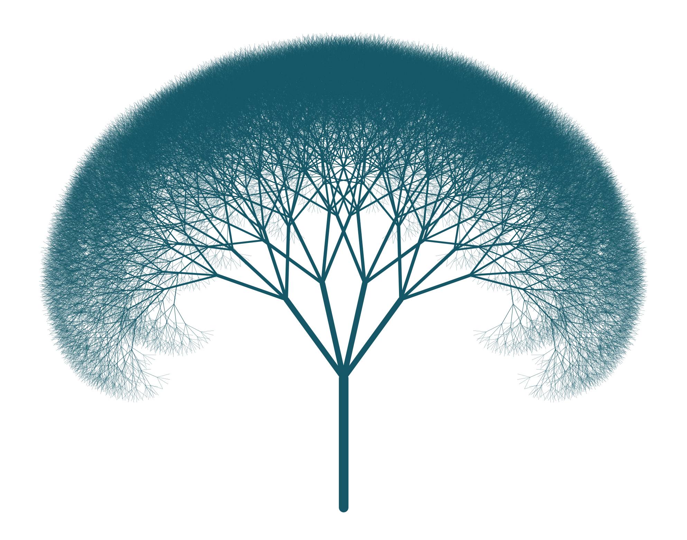

I am a 1st year PhD student at Stanford University. I work in artificial intelligence with a focus on algorithms for sequential decision making and reinforcement learning.
I am affiliated with Stanford Artificial Intelligence Laboratory (SAIL), where my research is advised by Dorsa Sadigh.
Previously, I studied mathematical physics as an undergraduate at Stanford University. Outside of AI, I am interested in pure mathematics, especially abstract algebra and neighbouring fields.
I work on reinforcement learning and sequential decision-making with the goal of developing AI that can solve extremely complex problems in new ways. My current interests lie in a number of different areas, including exploration-exploitation strategies, training-time and inference-time search, and stabilizing deep RL over long horizons. In my recent work, I have studied algorithms designed towards these goals and how they interact with large language models.
These days, I focus on learning to search during training through explicit learning signals, rather than relying on search only as a inference-time compute strategy.
( * denotes co-lead. )
Full list of publications can be found here: All Papers.
Introductory notes on various topics I find interesting.
CS 224R - Deep Reinforcement Learning. Head CA. Spring, 2025.
CS 229 - Machine Learning. CA. Winter, 2025.
